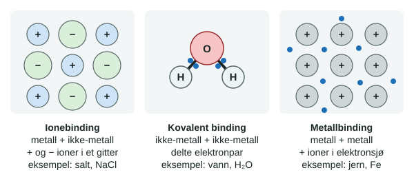
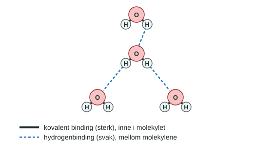
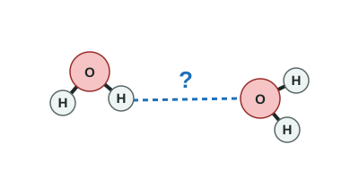

Svake bindinger og egenskapene til vann
Vann er det viktigste stoffet i prosessindustrien. Det brukes som løsemiddel, kjølevann og damp. At vann er så nyttig, skyldes svake bindinger mellom vannmolekylene. For stoffer som består av molekyler, avgjør de svake bindingene også om stoffet er gass, væske eller fast stoff ved romtemperatur.
Sterke og svake bindinger
Ionebinding, kovalent binding og metallbinding er sterke bindinger. De holder atomer eller ioner sammen inne i et stoff, for eksempel atomene i et vannmolekyl eller ionene i salt.

Mellom molekylene virker det også krefter. De er mye svakere og kalles svake bindinger. Når vann koker, er det de svake bindingene mellom molekylene som brytes. Selve vannmolekylene holder seg hele.
Jo sterkere de svake bindingene er, jo mer energi trengs for å skille molekylene, og jo høyere blir kokepunktet.
Tre typer svake bindinger
- Hydrogenbinding er den sterkeste av de svake bindingene. Den dannes når et hydrogenatom er bundet til oksygen, nitrogen eller fluor. Da får hydrogenet en stor positiv delladning (δ+) og tiltrekkes av et oksygen-, nitrogen- eller fluoratom i et nabomolekyl.
- Dipolbinding er tiltrekning mellom polare molekyler (dipoler). Plussiden på ett molekyl tiltrekker minussiden på et annet.
- Også upolare molekyler tiltrekker hverandre litt. Disse kreftene kalles ofte van der Waals-krefter. Kraften er svak, men øker med størrelsen på molekylet. Derfor er metan (CH4) en gass, mens bensin og olje, som har større molekyler, er væsker.

Eksempel
Vann (H2O) og hydrogensulfid (H2S) har samme vinklede form. Hydrogensulfid er nesten dobbelt så tungt (34 u mot 18 u for vann), men koker likevel ved mye lavere temperatur.
- I vann er hydrogen bundet til oksygen. Det gir sterke hydrogenbindinger mellom molekylene.
- I hydrogensulfid er hydrogen bundet til svovel. Det gir ikke hydrogenbindinger, bare svake dipolbindinger og van der Waals-krefter.
- Det trengs derfor mye mer energi for å skille vannmolekylene fra hverandre.
Svar: Hydrogenbindingene gir vann et mye høyere kokepunkt. Uten dem ville vann vært en gass ved romtemperatur.
Egenskapene til vann
| Egenskap | Forklaring | Betydning i praksis |
|---|---|---|
| godt løsemiddel | Vannmolekylene er polare og trekker til seg ioner og andre polare molekyler. | Mange salter og syrer løses i vann på laben og i prosessen. |
| stor varmekapasitet | Det trengs mye energi for å varme opp vann, fordi hydrogenbindingene må «ristes løs». | Vann er godt kjølevann og tar opp mye varme fra utstyr. |
| stor fordampingsvarme | Når vann fordamper, må alle hydrogenbindingene brytes. | Damp frakter mye energi og brukes til oppvarming. Svette kjøler kroppen. |
| overflatespenning | Molekylene i overflaten holdes ekstra godt sammen av hydrogenbindinger. | En binders kan ligge oppå vannet. |
| is flyter | Når vann fryser, låser hydrogenbindingene molekylene i et åpent mønster med mye plass. | Is har lavere massetetthet enn vann: 1 liter is veier mindre enn 1 liter vann. Vann som fryser i rør, utvider seg og kan sprenge røret. |
Fordi damp har tatt opp mye energi, gir damp verre brannskader enn kokende vann. Når dampen treffer huden, kondenserer den og gir fra seg all fordampingsvarmen. Vær forsiktig med damplinjer og varmt utstyr i anlegget og på laben.
Test deg selv
Hva kalles bindingen som er merket med spørsmålstegn?

- kovalent binding
- hydrogenbinding
- ionebinding
Bindingen går mellom to molekyler, fra H til O. Det er en hydrogenbinding. Bindingene inne i molekylene er kovalente.
Hva brytes når vann koker?
- de kovalente bindingene mellom O og H
- hydrogenbindingene mellom vannmolekylene
- ionebindingene i vannet
Vanndamp er fortsatt H2O. Det er bindingene mellom molekylene som brytes.
Når dannes en hydrogenbinding?
- Når H er bundet til O, N eller F og tiltrekkes av O, N eller F i et nabomolekyl.
- Når H er bundet til C.
- Mellom to ioner.
Da får hydrogenet en stor positiv delladning og tiltrekkes av O, N eller F i et annet molekyl.
Hvorfor er vann et godt kjølemiddel?
- Det koker lett.
- Det har stor varmekapasitet.
- Det leder strøm.
Vann tar opp mye varme før temperaturen stiger.
Metan er en gass, mens olje er en væske. Hvorfor?
- Olje er polar.
- Oljemolekylene er større og tiltrekker hverandre mer.
- Metan har ionebinding.
Tiltrekningen mellom upolare molekyler øker med størrelsen.
Hvorfor kan et vannrør sprekke når det fryser?
- Isen tar større plass enn vannet.
- Isen er tyngre enn vannet.
- Vannet koker.
Hydrogenbindingene låser molekylene i et åpent mønster.
Ordliste
| Begrep | Forklaring | Engelsk |
|---|---|---|
| svak binding | Tiltrekning mellom molekyler. Mye svakere enn bindingene inne i molekylene. | |
| hydrogenbinding | Den sterkeste svake bindingen. Et hydrogenatom bundet til O, N eller F tiltrekkes av et O-, N- eller F-atom i et annet molekyl. | |
| dipolbinding | Tiltrekning mellom polare molekyler, der plussiden på ett molekyl tiltrekker minussiden på et annet. | |
| kokepunkt | Temperaturen der en væske koker og blir til gass. | boiling point |
| varmekapasitet | Hvor mye energi som trengs for å varme opp et stoff med 1 °C, for eksempel per kilogram. | heat capacity |
| overflatespenning | At molekylene i overflaten av en væske holdes ekstra godt sammen, slik at overflaten oppfører seg som en tynn hinne. |
Les mer
- Kjemien stemmer, kapittel 3. Oppgaver: 3.4.3–3.4.5 og 3.5.1–3.5.3.
Om kildene: Teksten, eksemplene og figurene på denne siden er laget for dette nettstedet. Siden bygger på undervisningsopplegg i kjemiprosess- og laboratoriefag ved Sauda vgs, som er utarbeidet med utgangspunkt i blant annet Kjemien stemmer, Laboranten og åpne nettkilder.